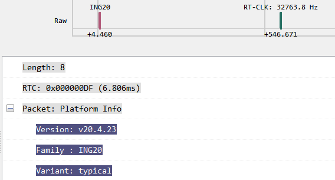
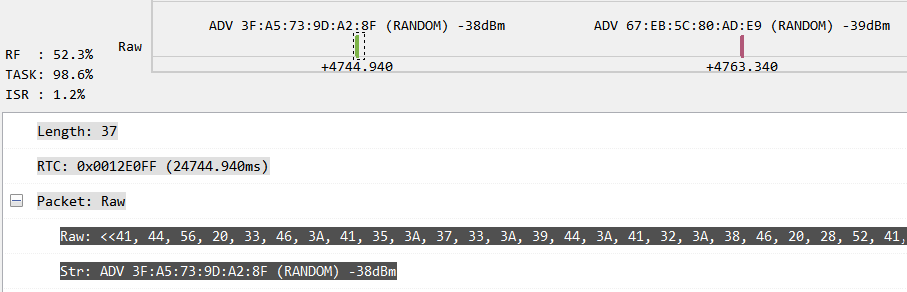
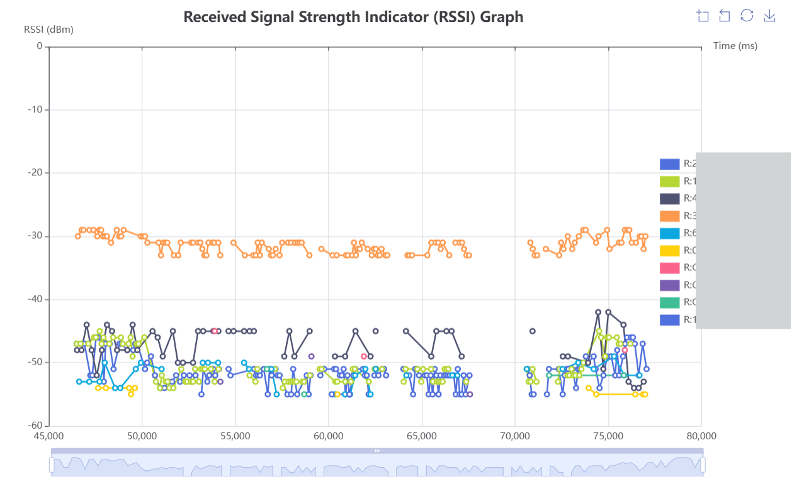
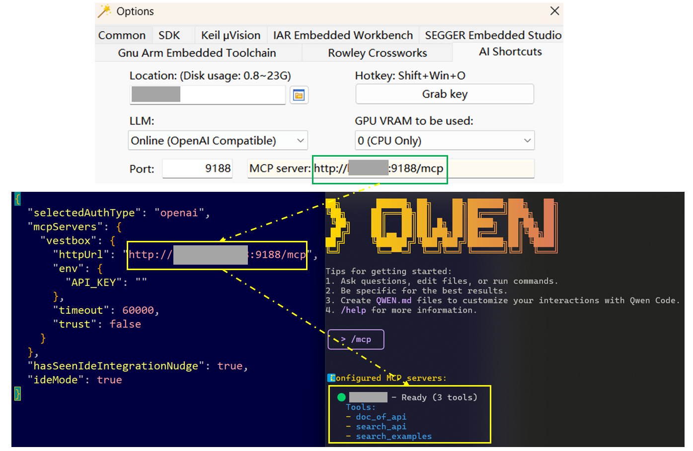
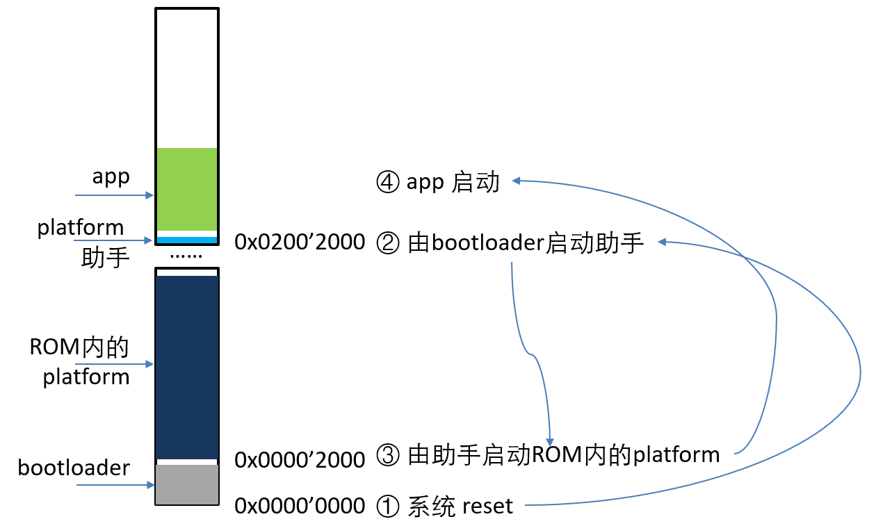

Highlights:
- 支持 ING20xx 系列（软件包、外设驱动、工具、示例）
- 支持 EATT (目前为“预览”：仅限 exp, noos_exp 软件包, API 可能修改)
- ROM 内的协议栈版本与 v8.4.22 相同。
- 省电功能仍在优化中。
- 对于使用 ROM 的项目，axf_tool 暂不支持基于 dump 的各项分析。
v9.0.3
1. 软件包
-
[修正]
LL_FLAG_LEGACY_ONLY_SCANNING无效此问题由 v8.5.4 优化 Controller 调度时引入。
-
[修正] ING20：
platform_shutdown功能异常
2. 库函数
-
[新增] USB CDC ACM 模块
使用此模块可以方便地为应用加入虚拟串口功能。
-
[更新] ING20 时钟相关: 增加 FastPre 时钟控制接口
SYSCTRL_SetFastPreDiv,SYSCTRL_GetFastPreCLK -
[修正] ING20 时钟相关:
SYSCTRL_GetFlashClk -
[修正] ING20 ASDM：
ASDM_ClrOverflowError -
[修正] ING20 ADC：
ADC_HardwareCalibration,ADC_GetDataChannel
3. 示例
- [更新] Voice Remote Control: ING20 演示 ASDM + DMA 实现模拟 MIC 声音采集
4. 工具
-
[修正] GUI Downloader：使用 ING-DAPLink 时可能无法启动应用
-
[更新] Cube 支持配置 QDEC Step 时钟
-
[更新] Wizard：新建项目时可选择使用 USB CDC ACM 输出
printf信息 -
[更新] Wizard：新建项目时调试器默认 CMSIS-DAP
v9.0.2
1. 软件包
-
[修正] ING20：多连接时内存不足
ING20 mass_conn 软件包支持最多 5 连接，mini 支持 1 个连接；其它软件包支持最多 3 连接（旧版本支持 2 连接）。
-
[修正] ING20：noos 软件包无法使用
-
[修正] ING20 ROM：开启低功耗后，
platform_set_timer唤醒时间错误 -
[修正] Platform 启动时 Trace 输出芯片系列总是为 ING918
-
[更新] Controller：改善 Master 角色对低吞吐率设备的兼容性
-
[更新]
att_server_init旧版本
att_server_init用于初始化 ATT Server，并设置回调。新版本仅用来设置回调，ATT Server 初始化由 platform 完成。 旧版att_server_init必须在PLATFORM_CB_EVT_PROFILE_INIT事件中调用，并且只能调用一次。新版 SDK：
- 如果应用不涉及 ATT 特征的写入、或者动态数据的读取，那么可以不调用
att_sever_init。 - 允许多次调用
att_sever_init，更新回调函数。
- 如果应用不涉及 ATT 特征的写入、或者动态数据的读取，那么可以不调用
2. 库函数
-
[修正] ING20 时钟相关：
TMR_GetClk,SYSCTRL_SelectPWMClk,SYSCTRL_SelectSpiClk -
[更新] ING20 ASDM：支持两种
ASDM_Mode -
[更新] ING20 ADC：增加
ADC_GetData,ADC_SetVref,ADC_HardwareCalibration -
[修正] USB BSP：
bsp_usb_disable()导致的枚举问题 -
[更新]
rf_enable_powerboost：适配 ING20
3. 示例
-
[更新] Voice Remote Control: 演示 ING20 ASDM 的使用（包括 AMIC 和 PDM 两种解码方式）
-
[更新] 示例适配 ING20，修复相关问题，如
- Peripheral Beacon：出现软件断言，无法运行；
- Thermometer with FOTA: 升级时出现 HardFault；
- HID Mouse：
DB_FLASH_ADDRESS地址非法。
4. 工具
-
[更新] Wizard：集成基于 pyOCD 的 RTT log 工具
目前 Windows 版本的 DAP-Link RTT log 工具传输效率不及基于 pyOCD 的 RTT log 工具， 所以用这个工具替换了原右键菜单中的 ING-DAP-Link 工具，既支持 J-Link，也支持 DAP-Link。用法：
- 安装 Python，参考 文档 安装其它依赖项；
- 将 Python 主程序（
python.exe）的完整路径填写到 Wizard 选项中。
当未配置
python.exe选项时，回退使用 Windows 版本的 DAP-Link RTT log 工具。
v9.0.1
1. 软件包
-
[新增] EATT
-
[修正] ING20 ROM：广播时可能出现断言
如果遇到
assertion@ble50_llm.c:...，可在app_main里调用platform_rom_hotfix_using_fpb。 此补丁基于 FPB 的实现，可能与在线调试功能相互影响。 -
[修正] ING20：开启低功耗后，
platform_set_timer无法正确唤醒
2. 库函数
- [更新] ING20：补充和完善了 PTE/GPIOTE/SYSCTRL/KeyScan 等外设的驱动
3. 工具
-
[修正] Downloader：显示的 ING916 Flash 大小错误
此问题由 v9.0.0 引入。
4. 文档
- [新增] 《ING20XX 系列芯片外设开发者手册》
v9.0.0
1. 软件包
-
[新增] 支持 ING20
-
[修正]
ll_set_conn_acl_report_latency导致连接不稳定
2. 库函数
- [新增] 支持 ING20
3. 示例
- [更新] CherryUSB: 演示 USB Host 功能
4. 工具
-
[新增] 支持 ING20
-
[更新] Trace 相关
Platform 启动时会通过 Trace 输出芯片系列、版本等基础信息。

SDK 内置的 Trace 记录工具会自动记录开始时的 PC 时间。调用
platform_rt_clk_auto_tune时， Trace 会输出调谐后的时钟频率。基于这两项数据，Tracer 可以比较准确地显示 PC 时间，方便对照分析。利用工具函数
platform_trace_raw_printf可通过 Trace 输出字符串：
新增菜单 “Charts -> RSSI of Advertisers …”，用来生成广播的 RSSI 曲线图，支持通过最小 RSSI、地址等过滤数据。

-
[更新] AI Shortcuts：MCP 服务器
AI Shortcuts 的 MCP 服务器提供了几个有关 SDK 的工具。 Options 窗口的 AI Shortcuts 页面显示了 MCP 服务器 的 URL。下图显示了 Qwen Code 使用该服务器的情形。

温馨提示:MCP 服务器功能正在持续迭代、优化，请及时更新 AI Shortcuts。
使用 ING20 的 ROM
ING20 ROM 内置软件包，创建新项目时选择 rom 即可。此时烧录的 platform.bin 由 Platform Companion 项目生成，
负责芯片初始化、启动 ROM 内的 platform.bin，并修正其中可能存在的问题。系统的启动流程如图。

ROM 内 platform 可能错误配置了某些寄存器。为此，Platform Companion 提供了热修复补丁，
需要在 app_main 加以调用：
uintptr_t app_main()
{
#ifdef PLATFORM_IN_ROM
platform_rom_hotfix();
// v9.0.1 及以上版本包含了基于 FPB 的补丁，可能与在线调试功能相互影响
platform_rom_hotfix_using_fpb();
#endif
...
}
从协议栈功能看，ROM 内置软件包相当于带有扩展功能的 mini 包。
另外，ING20 也支持在 Flash 里下载 typical/mini 等不同类型的软件包，用法与 ING918、ING916 相同。